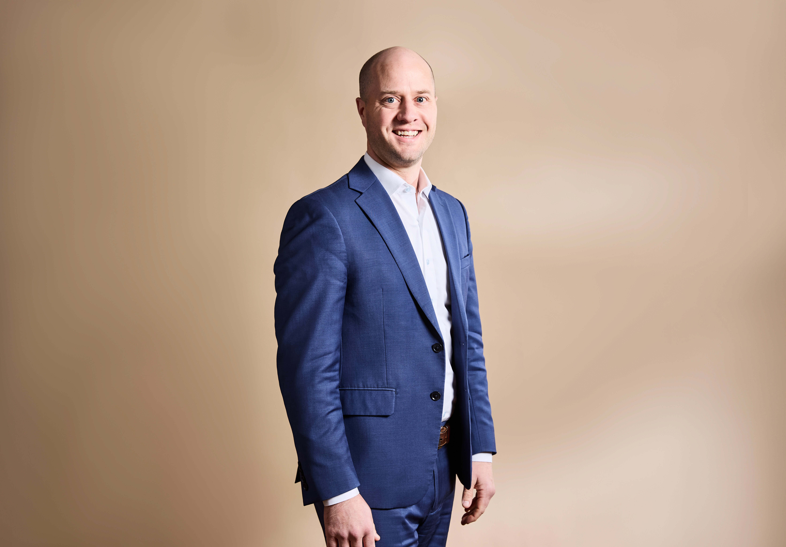

Steady guidance when the next step matters.
Mark's practice includes reckless driving, DUI/DWI, serious traffic offenses, criminal and white collar cases, and internal investigations. He combines courtroom experience, public service and direct communication to help clients understand an unfamiliar process.
Request a Review with Mark's Team
Mark Earley · PartnerMark is dedicated to public service, having served in the Virginia House of Delegates. His law practice primarily includes Reckless Driving, DWI/DUI, Serious Traffic Offenses, Criminal Cases, White Collar Criminal Cases, Internal Investigations, and some Family Law and Civil matters. Mark has handled a variety of cases in Circuit Court, General District Court, as well as Juvenile and Domestic Relations Court.
A prolific problem solver, Mark works to solve legal problems by bringing to bear his deep experience in law, government, and the community.
Mark received his J.D. from the University of Virginia School of Law, and his B.A. from Virginia Tech, where he studied Political Science, History, and English. Prior to joining Avodah Legal, Mark practiced at McGuireWoods, LLP, where he focused on government investigations and white-collar litigation. Mark served as a law clerk to the Honorable Henry E. Hudson, U.S. District Judge for the Eastern District of Virginia. He also interned with the Honorable William C. Mims of the Supreme Court of Virginia, as well as the Honorable Randolph A. Beales of the Court of Appeals of Virginia.
Before attending law school, Mark served in former Governor Robert F. McDonnell's administration, primarily assisting with the Prisoner and Juvenile Reentry Council. He also coordinated and lobbied on behalf of a non-profit organization, interacting with members of the Virginia General Assembly. Mark is admitted to practice law in Virginia, as well as the U.S. Court of Appeals for the 4th Circuit, the U.S. District Court for the Eastern District of Virginia, and the U.S. District Court for the Western District of Virginia.
Mark and his wife, Mary Alice, have served as foster parents for over five years, having cared for six foster children in that time. His family attends a local church and he's been active in the community, serving on several boards. They have two sons and a hound dog named Blue.
View Mark's Full Avodah Legal ProfileStart with the summons and the court date.
Share the charge as written, the court or locality, the court date and your license state. Mark's team will confirm whether the firm can help.
Request a Case Review